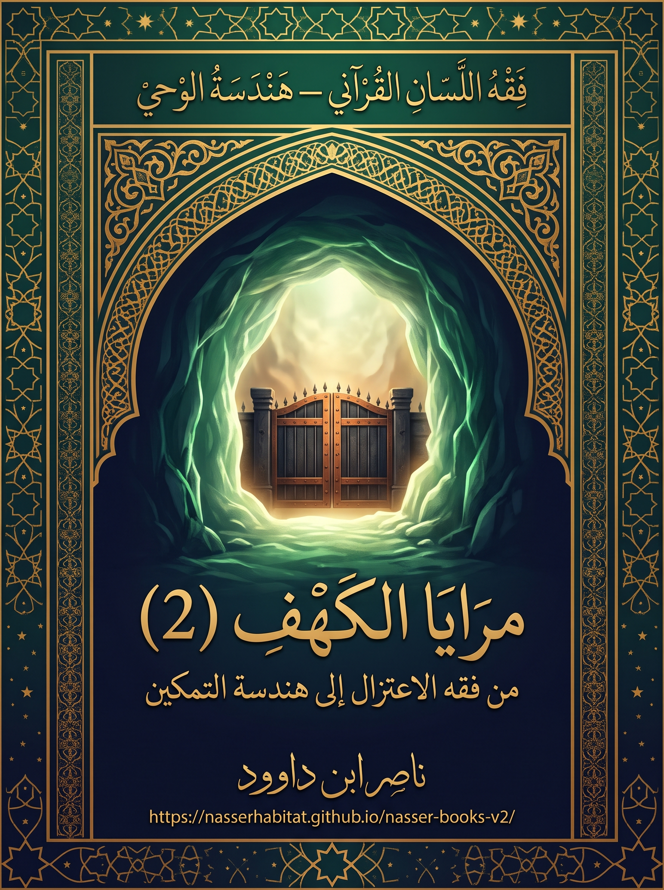

139. مرايا الكهف (2) — من فقه الاعتزال إلى هندسة التمكين

دراسة بنيوية استقرائية في آيات سورة الكهف وقصصها الأربع وفق فقه اللسان القرآني ونظام المثاني ومنهج QCROS، تميّز بين منطوق النص والأدلة المقاومة والنماذج التربوية.
النسخة الإنجليزية تكييف مفاهيمي مختصر؛ يبقى النص العربي المرجع الأساسي.
قراءة PDF داخل الموقع / Read the PDF on this website
جارٍ تجهيز القارئ… / Preparing the reader…
ملخص الكتاب وفهرسه الموضوعي (مقتطف نصي للفهرسة والبحث)
فقه اللسان القرآني — هندسة الوحي
مرايا الكهف (2)
من فقه الاعتزال إلى هندسة التمكين
دراسة بنيوية استقرائية في آيات سورة الكهف وقصصها الأربع
وفق فقه اللسان القرآني ونظام المثاني ومنهج QCROS
ناصر ابن داوود • 2026
القرآن الكريم هو المدونة الحاكمة؛ وقراءة المؤلف اجتهاد يميّز بين منطوق النص والأدلة المقاومة والنماذج التربوية.
ميثاق هذه النسخة الجامعة
أقدّم هذا الجزء امتدادًا لمرايا الكهف (1)، وأجعل الآيات القرآنية حاكمة على فرضياتي. أستعمل المثاني أداة استكشاف، وQCROS ميزانًا لفصل [ن] النص، [ب] البيان، [ا] الاستقراء، [ف] الفرضية، [خ] الاختبار، [و] النموذج، [ح] حدّ الصلاحية.
أضع مع كل أطروحة ما يقاومها. ولا أُلغي الهيئة الحسية لقصص السورة حين أستلهم منها معنى وظيفيًا. تبقى قضايا المنام/المنمى والرقود و309 سنة والرقيم والغلام ووظائف الوصيد والردم مفتوحة بحسب أدلتها، ولا أُلزم قارئي بخريطة واحدة للمقاصد.
ميزان القبول داخل البحث: تظل [ن] و[ب] و[ا] و[ف] و[خ] و[و] و[ح] وظائف للتحليل، بينما OPEN وCANDIDATE وSUPPORTED وRESISTED وMODEL أحكام على القضايا وفق الدليل. لا يُرفع النموذج إلى معنى لفظي ولا يُسقط الخبر الحسي لمجرد أن الاستعارة نافعة.
أجعل القرآن الكريم مرجع هذه الدراسة، وأميز بين النص وبيانه والاستقراء والفرضية والنموذج. أعرض الأدلة المقاومة وأبقي الأسئلة التي لم تُحسم مفتوحة، فلا تُرفع الاستعارة إلى تعريف قرآني ولا تُنسب النتائج الاجتهادية إلى الوحي. يعتمد سجل البحث البطاقات K-01 إلى K-15، ويجمع الكشاف الأسئلة المتفرعة عنها بوصفها وسائل للبحث لا أحكامًا نهائية. أدعو القارئ إلى النظر والموازنة والتصحيح.
المحتويات
ميثاق هذه النسخة الجامعة ت
هذا الكتاب في صفحتين — مدخل للقارئ د
السؤال الذي يحكم هذا الجزء د
ماذا أُكمل من الجزء الأول؟ د
خريطة العمل في الأبواب الأربعة د
من هيئة النص إلى مدلوله العملي د
ميثاق القراءة ذ
ما الذي أرجوه من القارئ؟ ذ
القسم التأسيسي — كيف نقرأ القرآن؟ 1
تمهيد — وظيفة هذا القسم وموقعه 1
المبحث الأول — الهداية واختلاف التلقي: كيف يصير المثل امتحانًا للقارئ؟ 1
المبحث الثاني — الظاهر أساس الفحص والتدبر امتداد مسؤول 1
المبحث الثالث — المحكم والمتشابه والمثاني: شبكة استقراء لا فوضى تأويل 2
المبحث الرابع — الله هو الهادي والمعلِّم: نورٌ يُلتمس ولا يُمتلك 2
المبحث الخامس — الآفاق والأنفس: القلب بوصفه «كهفًا» في النموذج 3
المبحث السادس — خارطة الموقف بين الدليل والدليل المقاوم 3
ثانيًا — ميثاق المؤلف والقارئ: سبعة التزامات 3
ثالثًا — بطاقة QCROS: من القراءة إلى الاختبار المسجّل 4
تطبيق محلول — ملف «الرقود» مع استئناف «المنام/المنمى» 5
رابعًا — حالات البحث: كيف أتخذ قرارًا دون إغلاق السؤال؟ 5
خامسًا — بوابة الانتقال إلى الأبواب الأربعة 5
خاتمة القسم التأسيسي — الميثاق الذي يعود إليه القارئ 6
الآيات والمراجع 6
الباب 1 — التشريح اللساني لمنظومة الكهف والرقيم 7
بطاقة قراءة سريعة — خريطة الباب 7
مقدمة الباب — حدود المدونة ومستويات القراءة 7